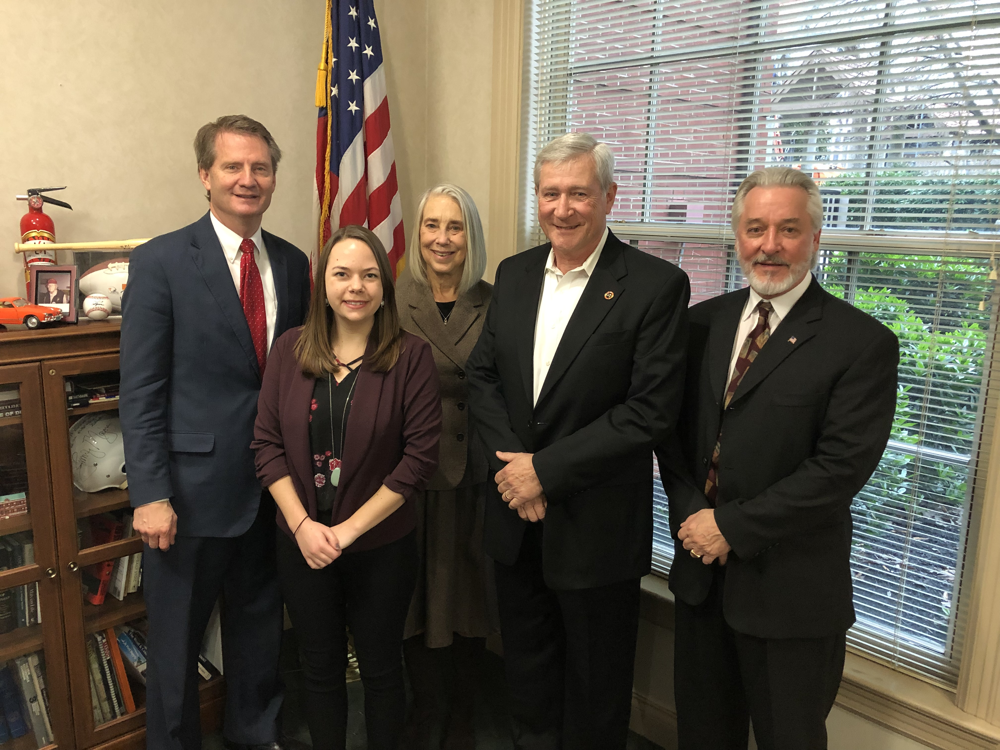

The Knoxville Mayor and City Council unanimously passed a resolution establishing carbon reduction goals for the city with targets of 50% by 2030 and 80% by 2050. This is a historical turning point for Knoxville and we should be grateful for this responsible leadership.
If you get a chance, please let them know that you support their decision with a thank you email.
We had a successful Initial Meeting with Rep. Tim Burchett (TN-02). See Chet's message for further details.
August 11 Community TV Climate Event. Dr. Joanne Logan, of the Greater Knoxville CCL Chapter and our Advocate Workshop leaders, national CCL representatives, Don Kraus, Field Development Coordinator, and Jim Tolbert, Conservative Outreach Director, joined Renee Hoyos, Executive Director of the Tennessee Clean Water Network, in a climate related television program, that was broadcast live at 7:30 p.m. Friday August 11 on Community TV of Knox County. The video recordings of the program can be viewed at
August 12 Climate Workshop Event. Saturday, August 12, the CCL Climate Advocate Workshop, was a fantastic, participatory experience for the Greater Knoxville CCL Chapter. The training, conducted by two national CCL representatives, Don Kraus, Field Development Coordinator, and Jim Tolbert, Conservative Outreach Director, provided excellent guidance and instruction on the function and goals of our chapter. It emphasized Citizens’ Climate Lobby’s philosophy and details of how its solution, Carbon Fee and Dividend, works. We had 29 very impressive attendees, whose backgrounds covered a range of scientific and professional interests, all of who vigorously joined into the workshop happenings. Thanks to all for your contributions to the workshop and to chapter members who provided venue, refreshments and cleanup.
We plan to be an active, all inclusive, total participatory Chapter of CCL, where each member contributes according to her/his desire and time available. The advantages of being associated with CCL are many, including helping solve the critical global problem of climate change, having a tangible impact on a significant issue; recognizing that if we complete our designated mission, we have achieved the single goal of our Chapter and the Citizens’ Climate Lobby; and, last, but certainly not least, becoming friends with concerned citizens, who are united on climate change. Thank you for your interest and help directed towards maintaining a sustainable health of our environment. The Greater Knoxville Chapter of CCL needs and welcomes you, your talents and your expertise!
September 18 Meeting. The Greater Knoxville Chapter of the Citizens’ Climate Lobby monthly meeting will be held on Monday, September 18, 6:25 – 7:45 PM at the Bearden Public Library, 100 Golfclub Rd, Knoxville TN. Chapter preliminary activities will begin at 6:00 pm and end at 8:00 pm, with the meeting formally starting at 6:25 pm. The meeting, devoted to education and organization, is hopefully structured for efficiency; we recognize time is cherished, and thank you for spending some on climate change. The educational components will consist of a report about the CCL September call; then, we will be treated to a talk by Dr. Scott Painter, of the Climate Change Science Institute, Oak Ridge National Laboratory, Oak Ridge TN, who will speak about topics his research area, Climate Change and Hydrology.
A tentative Agenda for Monday, September 18, 6:00 – 8:00pm is
Please note, we are requesting brief information reports from Chapter Teams following a very short Team Planning session. This is an unusual and ambitious request; first, because we have not had a meeting of the group, and, second, you might not even know that you are, or will be on a team. A reason for starting so energetically is our work is critical, becoming more essential every day, and hopefully this will get our members communicating, so that meetings need not be spent on organizational items, but on production. Also, some of you have already started discussions, and this provides an opportunity to proceed. The teams, cluster topics, suggested goals, and team members are provided for guidance and are only tentative, all certainly subject to change. The team members are suggested by reading of the workshop interest sheets, those turned in at the end of the workshop. If you did not attend the workshop, or if you attended and did not fill out the interest form, you are not listed in a team; however, you may be added to a team of your choice. Please join a team during the Set Up and Greet portion of the meeting. Again, you need not stay in the team in which you are suggested, this is only a preliminary suggestion based upon minimal data. All the suggestions below are preludes, given only to provide nominal guidance, and subject to the interests of the team. Clusters are to emphasize more specific task areas than the team classification, and may consist of only a few individuals… a few may be one, if that is all required or interested in the task. Please be thinking about what you can do for GKCCL.
Clusters: Community, Federal, Educational
Suggested Goals:
Suggested Team Members: Not listed on this site for privacy
Clusters: Information procurement, LTE, Op-Ed
Suggested Goals:
Team Members: Not listed on this site for privacy
Clusters: Meeting Logistics, Speakers Procurement, Coordinators for meetings
Suggested Goals:
Suggested Team Members: Not listed on this site for privacy
Clusters: Organization, Communications, Coordination
Suggested Goals:
Current Team Members: Not listed on this site for privacy
July Event Report. Thanks to the talented group of folks that attended the Meet and Greet session on July 19, at the Earth Fare in Turkey Creek. The 27 people there appreciated the introductory information provided by our speaker, Don Kraus, CCL Field Development Coordinator, who drove in from Asheville for this occasion. Thanks, Don, we welcome the encouragement and useful suggestions you made about activities of our Chapter. A encouraging event occurred when a meeting of a faith group, who were in an adjoining room, ended while we were still in session. Some came in, pulled up chairs, and were a most welcome addition.
August 11 Community TV Climate Event. Our Advocate Workshop leaders, national CCL representatives, Don Kraus, Field Development Coordinator, and Jim Tolbert, Conservative Outreach Director, will join Renee Hoyos, Executive Director of the Tennessee Clean Water Network, in a climate related television program, that will broadcast at 7:30 p.m. Friday August 11 on Community TV of Knox County. Cable channels for Community TV of Knox County: Comcast Channel 12; Charter Channel 193; Wow! Channel 6; ATT U-verse Channel 99.
August 12 Climate Workshop Event. Probably the most essential meeting of the year will occur on Saturday, August 12, The CCL Climate Advocate Workshop. The meeting time of the workshop is 9:00 am - 12:30 pm at The University of Tennessee, Agricultural Campus, 2500 East J. Chapman Drive, Biosystems Engineering and Soil Sciences, Room 268. There will be free parking in Lot 66 and snacks will be provided. The training will be conducted by two national CCL representatives, Don Kraus, Field Development Coordinator, and Jim Tolbert, Conservative Outreach Director.
The Workshop will include a brief introduction to climate change basics, Citizens’ Climate Lobby’s philosophy and details of how its solution, Carbon Fee and Dividend, works. We will identify the primary political levers necessary to help reduce the impact of fossil fuels on our environment – including lobbying, media relations, grassroots outreach, grasstops outreach and chapter development. Please be thinking about where your strengths will serve this worthy cause the best and be prepared to join a team that will focus on one of these political levers. Participants will learn and practice how to lobby, engage the media and give short “laser talks” on climate change solutions.
This workshop is open to all interested in the health of our environment. Please join us if you are curious about what you as an individual can do, or about what a group of concerned people can accomplish. You are also welcome if you just need something to do on a Saturday morning, but we would like to know if you are coming. If you have not yet RSVP’d for this important program, please RSVP here or go to: http://bit.ly/2h01I6u. Please share this with those in your network who you believe should attend. If you cannot be there, then please come to our September meeting that will be on the 18th, 6:30 – 7:45 p. m. at the Bearden Public Library, where we will welcome new members who have joined us because of this training workshop.
September 18 Monthly Meeting. The Greater Knoxville Chapter of the Citizens’ Climate Lobby September meeting will be held on Monday, September 18, 6:30 – 7:45 p. m. at the Bearden Public Library, 100 Golfclub Rd, Knoxville TN. Agenda will be in the September Newsletter.
For those interested in improving the health of our environment. If we individually strive to minimize our carbon footprints, we will have an influence. Regrettably, because all individuals will not, or cannot, minimize for numerous reasons, the totality of individual impacts probably will not significantly change our environment. To begin a rigorous attack on the problem, our population, the aggregate of individuals, must be offered an alternative to carbon utilization, one that is economically viable. The U. S., as the number 2 carbon emitter in the world, must constrain fossil fuels before they arrive at the buyer level, and concurrently provide a fiscally responsible, achievable replacement. This is exactly the approach and single goal of our Citizens’ Climate Lobby. CCL has a solution, now the work begins, respectfully persuading skeptics and generating support. Please check out our website, knoxccl.org, connect with us, and help solve the carbon pollution problem.
July Meeting. Just a gentle reminder that the Citizens’ Climate Lobby will have an informal Meet and Greet gathering on Wednesday, July 19th, 7 pm, at the Earth Fare in Turkey Creek, 10903 Parkside Drive, Knoxville. Even if you cannot arrive at 7, please join us for a brief discussion, led by Don Kraus, CCL regional development director, probably starting about 7:30.
IMPORTANT. August News Item. A Climate Advocate Training workshop will be offered by the Greater Knoxville Chapter of the Citizens’ Climate Lobby on Saturday, August 12, 9:00 am – 12 noon, on the University of Tennessee Agricultural Campus, 2500 EJ Chapman Drive, Biosystems Engineering and Soil Sciences Bldg., Room 268. The session is free and will teach citizens the intricacies of building political will and affecting change in positive, constructive ways. Citizens’ Climate Lobby (CCL) has a unique approach of achieving change through building positive, respectful relationships with lawmakers and focusing on specific market-based, consumer-friendly solutions that have received support from conservatives and liberals alike. The workshop will include a mini-lobbying training.